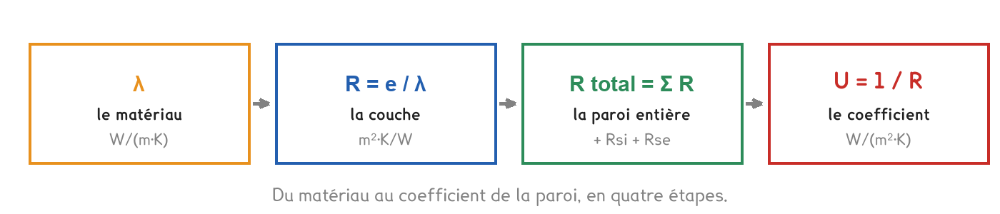

BTS FED option C · 2e année
D'où sortent les U qu'on vous donnait en séance 1 ? Ils ne se lisent nulle part. Ils se calculent, couche par couche, et c'est le calcul qui ouvre presque tous les sujets d'examen.
2 outils · 7 questions · 11 replis · 4 figures
Savoirs travaillés
En séance 1, on vous a donné deux nombres sans explication : U = 2,5 pour un mur non isolé, U = 0,35 pour le même mur isolé. Vous avez calculé des déperditions avec, sans savoir d’où ils sortaient.
Ils ne se lisent nulle part. Aucun fabricant ne vend un mur « à U = 0,35 » : il vend du parpaing, de l’isolant, du plâtre. Le U se calcule à partir de la composition de la paroi, et c’est ce calcul qui occupe la première partie de presque tous les sujets d’U41 : 24 points sur 80 à la session 2026.
Tout part d’une seule propriété : la conductivité thermique du matériau.
λ dit combien de chaleur traverse un mètre d’épaisseur de ce matériau pour un écart d’un kelvin. C’est une propriété du matériau seul : ni l’épaisseur de la couche, ni la surface du mur n’y changent quoi que ce soit. Un λ de 0,038 reste 0,038 qu’on en pose 5 cm ou 30.
Plus λ est petit, mieux le matériau isole. La convention retenue partout dans le métier : un isolant, c’est λ inférieur à 0,05 W/(m·K).
L’acier figure sur cette échelle alors qu’on n’en fait pas de murs. Ce n’est pas une curiosité : c’est lui qu’on retrouve dans les ossatures, les linteaux et les fixations qui traversent l’isolant. Un matériau qui conduit deux mille fois mieux que l’isolant qu’il traverse, ça se voit sur un bilan.
Une couche de matériau oppose une résistance thermique au passage de la chaleur. Elle se calcule en divisant l’épaisseur par la conductivité.
R = e / λ
Plus R est grand, mieux la couche isole.
Contrairement à λ, R dépend de l’épaisseur, c’est le seul levier dont on dispose une fois le matériau choisi. Doubler l’épaisseur double la résistance de la couche.
Une paroi est un empilement, et les résistances s’additionnent, comme des résistances électriques en série. S’y ajoutent deux résistances qu’on ne voit pas : les fines couches d’air qui adhèrent aux deux faces du mur.
R total = Rsi + Σ (e / λ) + Rse
Ces deux valeurs sont normalisées et ne se discutent pas. Elles paraissent négligeables, elles représentent pourtant 40 % de la résistance d’un mur en béton nu, où il n’y a pas grand-chose d’autre pour freiner la chaleur.
Le coefficient de la paroi est enfin l’inverse de sa résistance totale.
U = 1 / R total
Plus U est faible, mieux la paroi est isolée. C’est l’inverse de R : ne pas les confondre.
λ, R et U se ressemblent et se confondent vite. Leurs unités les séparent : λ contient un mètre d’épaisseur, R contient un mètre carré, U aussi mais à l’envers.
Une fois le U obtenu, on tient un nombre. Mais ce nombre cache un fait que le tableau de calcul ne dit pas, et que la coupe ci-dessous rend évident : dans une paroi isolée, une seule couche fait presque tout le travail.
La température ne chute pas régulièrement à travers le mur. Elle chute là où la résistance est grande. Vingt centimètres de parpaing valent moins que deux centimètres de laine minérale.
C’est ce qui répond au maître d’ouvrage qui propose de passer le béton de 20 à 25 cm « pour mieux isoler ». Il gagnera trois centièmes de m²·K/W. Le même argent en isolant lui en rapporterait cinquante fois plus.
En séance, vous calculez le U d’une paroi donnée. Un bureau d’études travaille dans l’autre sens : la réglementation impose un U maximal, et il faut trouver l’épaisseur d’isolant qui permet de l’atteindre.
L’isolation a des rendements décroissants. Les dix premiers centimètres apportent beaucoup, les dix suivants nettement moins, parce qu’on ajoute une résistance à une résistance déjà grande. C’est ce qui fixe l’épaisseur économiquement raisonnable, bien avant la limite technique.

À observer en entreprise
Relever la composition d’une paroi extérieure du bâtiment de l’entreprise, de l’intérieur vers l’extérieur. Chercher les λ sur les fiches produits ou les documents de chantier. Calculer R et U, comparer à la valeur réglementaire actuelle, de 0,20 à 0,25 W/(m²·K) pour un mur, et conclure sur ce qu’il faudrait ajouter.
L’outil ci-dessus est fait pour ça : il donne aussi l’épaisseur manquante.
Pour aller plus loin
Le cours dit « comme des résistances électriques en série ». Ce n’est pas une image : c’est la même équation.
| Électricité | Thermique | |
|---|---|---|
| Ce qui pousse | U (volts) | ΔT (kelvins) |
| Ce qui circule | I (ampères) | Φ (watts) |
| Ce qui freine | R (ohms) | R (m²·K/W) |
| La loi | I = U / R | Φ = ΔT / R |
Des couches empilées sont traversées par le même flux, l’une après l’autre. C’est une série, et les résistances s’ajoutent. C’est aussi ce qui explique le profil de température de la coupe : la chute aux bornes d’une résistance vaut Φ × R, et comme Φ est le même partout, la chute est proportionnelle à R.
Et quand c’est en parallèle ? Ça arrive dès qu’une paroi n’est pas homogène, une ossature bois avec de l’isolant entre les montants. Deux chemins se partagent le flux côte à côte, et ce sont les inverses qui s’ajoutent :
1 / R = 1 / R₁ + 1 / R₂
Exactement la formule des résistances électriques en parallèle. Les règles Th-U traitent ce cas par la méthode dite « des deux hypothèses » : on calcule un U maximal et un U minimal, et on prend la moyenne.
Conséquence de chantier : dans une ossature bois, les montants font passer la chaleur à côté de l’isolant. On appelle ça un pont thermique intégré, et il dégrade le U de la paroi de 10 à 15 %.
Le tableau de la séance donne des λ comme s’ils étaient gravés. En réalité un λ dépend de la température, de l’humidité et du vieillissement. D’où deux valeurs sur les fiches produits.
L’écart n’est pas anecdotique : un isolant mouillé perd l’essentiel de sa résistance, parce que l’eau conduit vingt-cinq fois mieux que l’air immobile. Une laine minérale gorgée d’eau ne vaut guère mieux qu’un mur nu.
C’est pour ça qu’on soigne le pare-vapeur, et c’est le lien avec le savoir A1-2, hygrothermie.
La certification ACERMI garantit le λ annoncé et sa tenue dans le temps. Sur un chantier, un isolant non certifié se refuse : sa performance n’est pas opposable.
0,13 et 0,04 valent pour une paroi verticale, flux horizontal. Sur un plancher ou une toiture, la convection ne se comporte plus pareil : l’air chaud monte, et il monte plus facilement qu’il ne descend.
| Paroi | Sens du flux | Rsi | Rse |
|---|---|---|---|
| Mur vertical | horizontal | 0,13 | 0,04 |
| Toiture, plafond | ascendant | 0,10 | 0,04 |
| Plancher bas | descendant | 0,17 | 0,04 |
Et la lame d’air ? Elle a une résistance, mais elle ne suit pas R = e/λ. Au-delà de deux ou trois centimètres, l’air se met à tourner et la convection annule le gain. La norme la plafonne donc.
| Épaisseur | R d’une lame non ventilée |
|---|---|
| 5 mm | 0,11 |
| 10 mm | 0,15 |
| 25 mm et au-delà | 0,18 |
Épaissir une lame d’air au-delà de 25 mm n’apporte donc rien. Et si la lame est ventilée (façade rideau, bardage) sa résistance tombe à zéro : l’air extérieur y circule, la paroi s’arrête là.
Les résistances superficielles ne sont pas des conventions arbitraires. Ce sont les inverses du coefficient d’échange superficiel h, qui rassemble la convection et le rayonnement à la surface de la paroi :
Rsi = 1 / hi = 1 / 7,7 = 0,13 et Rse = 1 / he = 1 / 25 = 0,04
À l’intérieur, l’air est calme : il n’emporte la chaleur que par convection naturelle, lentement. À l’extérieur, le vent brasse en permanence la couche limite : h est trois fois plus grand, donc la résistance trois fois plus petite.
C’est pourquoi une paroi mal isolée donne une sensation de froid même sans courant d’air. Sa face intérieure est froide, et votre corps rayonne vers elle.
Cette température de surface se calcule, et c’est elle qui décide s’il y aura condensation :
θsi = θi − U × Rsi × (θi − θe)
Reste à savoir à partir de quand la buée apparaît. C’est le rôle du point de rosée, et il se lit sur le diagramme de l’air humide.
L’air d’une pièce contient une certaine masse de vapeur d’eau. En le refroidissant sans rien lui ajouter, on arrive à un point où il ne peut plus la contenir : la vapeur se condense. Cette température, c’est le point de rosée.
Déplacez le point : la construction se refait. On part du point, on va vers la gauche à humidité absolue constante, et l’endroit où l’on rencontre la courbe de saturation donne le point de rosée.
Le lien avec la séance est direct. Une pièce à 20 °C et 60 % a un point de rosée à 12 °C. Un mur dont la face intérieure descend sous 12 °C se couvre de buée, et un mur non isolé, par −7 °C dehors, y descend sans difficulté. C’est le savoir A1-2 de cette séance, et c’est aussi pourquoi les moisissures apparaissent d’abord dans les angles : la surface y est plus froide qu’au milieu du mur.
Le bouton les quatre évolutions montre ce qu’on peut faire subir à cet air : le chauffer, le refroidir, l’humidifier à la vapeur ou par évaporation. Vous les retrouverez en deuxième année, sur les centrales de traitement d’air.
Le U d’une paroi décrit une paroi courante, loin de ses bords. Aux endroits où deux parois se rencontrent, un plancher qui traverse un mur, un refend, un appui de fenêtre, la chaleur trouve un raccourci que le calcul de U ignore complètement.
Φ = Ψ × L × ΔT
Le Ψ se lit dans les tables réglementaires ou dans l’avis technique du procédé. Il ne se calcule pas à la main : il vient d’une simulation en deux dimensions.
Ce que ça pèse réellement. Prenons la maison du CCTP de la banque d’exercices, 96 m² de murs à U = 0,24 ; 74 m² de toiture à 0,16 ; 74 m² de plancher bas à 0,31 ; 18 m² de menuiseries à 1,40. Les déperditions surfaciques totalisent 83 W/K. Ajoutons 40 m de plancher intermédiaire et 25 m de refends.
| Isolation | Ψ plancher | Ψ refend | Ponts | Part du total |
|---|---|---|---|---|
| Par l’intérieur | 0,70 | 0,50 | 40,5 W/K | 33 % |
| Par l’extérieur | 0,10 | 0,08 | 6,0 W/K | 7 % |
Un tiers des déperditions par les ponts thermiques en isolation intérieure. Ce n’est pas un détail de calcul : c’est le poste qui décide du niveau de performance atteignable, et c’est le premier argument technique en faveur de l’isolation par l’extérieur.
Le paradoxe qu’il faut avoir compris : plus on isole les parois courantes, plus la part des ponts thermiques augmente. Sur un bâtiment ancien non isolé, ils sont négligeables devant les murs ; sur un bâtiment au standard passif, ils deviennent le poste dominant. C’est pourquoi la question des ponts n’apparaît que sur les projets performants, comme le bâtiment EnerPHit du sujet 2026.
Passer d’un U à une déperdition demande une surface, et le relevé des surfaces est la partie du travail où l’on perd le plus de points, non parce qu’elle est difficile, mais parce qu’elle est fastidieuse et qu’on la bâcle.
La méthode, dans l’ordre :
Oublier de déduire les ouvertures compte double. On compte la surface de fenêtre une fois dans le mur, à U = 0,24, et une fois en menuiserie, à U = 1,40. Non seulement on ajoute une surface qui n’existe pas, mais on sous-estime sa déperdition sur une partie. Le correcteur repère l’erreur immédiatement : la somme des surfaces dépasse la surface d’enveloppe.
Le tableau qu’on remplit, et qui est très souvent un document réponse à compléter :
| Paroi | S ou L | U ou Ψ | ΔT | Φ |
|---|---|---|---|---|
| Murs | m² | W/(m²·K) | K | W |
| Menuiseries | m² | W/(m²·K) | K | W |
| Ponts | m | W/(m·K) | K | W |
Deux colonnes, deux unités. Les surfaciques en mètres carrés avec un U, les linéiques en mètres avec un Ψ. Mélanger les deux donne un résultat faux d’un facteur qui passe inaperçu, c’est l’erreur la plus discrète de tout le chapitre.
Le contrôle de vraisemblance. Une maison individuelle correctement isolée se situe autour de 100 à 150 W/K. Un GV de 800 W/K sur une maison signale une erreur de surface ou d’unité ; un GV de 15 W/K aussi.
La question tombe sous forme de justification, et une réponse qui ne parle que de R passe à côté. Le R peut être identique dans les deux cas ; tout le reste diffère.
| Par l’intérieur | Par l’extérieur | |
|---|---|---|
| Ponts thermiques | subsistent : un tiers des pertes | traités, 7 % |
| Inertie du mur | perdue, elle est du côté froid | conservée, côté chaud |
| Surface habitable | réduite de l’épaisseur | inchangée |
| Occupation du logement | travaux dedans, pièce par pièce | possible sans déménager |
| Façade | inchangée | modifiée : accord d’urbanisme |
| Coût | plus faible | plus élevé |
Ce qui décide, en pratique. L’extérieur est techniquement supérieur sur presque tous les points, et il perd sur deux : le coût, et l’aspect de la façade. Sur un bâtiment classé ou en secteur protégé, l’intérieur est parfois la seule option, et c’est exactement le cas du musée du sujet 2024, un palais historique.
Une bonne justification cite au moins deux critères de nature différente : un thermique (les ponts, l’inertie) et un non thermique, la surface, le coût, l’urbanisme. Une réponse qui n’invoque que la performance est incomplète, parce que la décision réelle ne se prend jamais sur la seule performance.
Le cas de l’isolation répartie, qu’on rencontre en construction neuve : brique monomur, béton cellulaire. Le mur isole par lui-même, il n’y a plus de couche d’isolant. Les ponts thermiques y sont faibles par construction, pas de rupture dans le matériau, mais le R atteignable plafonne. C’est une troisième voie, et non un compromis entre les deux premières.
Tout ce chapitre décrit un régime permanent : des températures figées, un flux constant. C’est le bon modèle pour le calcul de chauffage, qui se fait au jour le plus froid. Ce n’est plus le bon modèle pour l’été.
Ce qui change en été. La température extérieure oscille, 15 °C la nuit, 35 °C l’après-midi. Le flux n’est plus constant : il entre le jour et ressort la nuit. Une paroi ne se contente plus de résister, elle stocke.
Deux grandeurs nouvelles, qu’aucun R ne contient :
Deux parois de même R peuvent avoir des comportements d’été opposés. Une ossature bois avec laine minérale et un mur en béton avec le même R résistent identiquement en hiver ; l’un surchauffe l’après-midi, l’autre pas. Répondre « même R, donc même confort » est faux, et c’est une question de justification récurrente.
Ce qu’un bureau d’études en fait. Le calcul en régime permanent ne sait pas traiter ça : il faut une simulation thermique dynamique, qui découpe l’année en pas de temps horaires et suit les températures de chaque paroi. C’est le savoir A2-2 du référentiel, au niveau 2 pour l’option C : on doit savoir de quoi il s’agit et pourquoi elle est nécessaire, sans avoir à la conduire.
L’ordre de grandeur à retenir : les matériaux denses et les isolants biosourcés déphasent nettement mieux que les isolants légers, à R égal. Les valeurs précises se lisent dans les fiches produit, elles ne s’apprennent pas.
Un candidat qui sort de ce chapitre pense qu’on réglemente les U. C’est vrai pour les garde-fous, des valeurs plafond, paroi par paroi, à ne pas dépasser, mais ce n’est plus le cœur du dispositif depuis longtemps.
Ce qui est réellement plafonné, ce sont des indicateurs globaux du bâtiment :
La conséquence pour vous : deux bâtiments peuvent avoir les mêmes U et des résultats réglementaires très différents, parce que l’un est bien orienté, compact et protégé du soleil, et l’autre non. La compacité, le rapport de la surface déperditive au volume chauffé, pèse autant que l’épaisseur d’isolant, et elle ne coûte rien : elle se décide au dessin.
Les seuils, les noms d’indicateurs et les dates ne se récitent pas. Ils changent de génération réglementaire en génération réglementaire, et le sujet d’épreuve fournit toujours l’extrait du texte applicable. Ce qui se retient, c’est la logique : besoin, puis consommation, puis confort d’été, puis carbone, et le fait que le U ne soit qu’une entrée parmi d’autres.
Le calcul de cette séance sert tel quel sur un circuit frigorifique, et pour une raison qu’on ne rencontre pas sur un mur : empêcher la condensation.
La ligne d’aspiration ramène au compresseur une vapeur à 5 °C. Dans un local à 30 °C et 60 %, l’air a un point de rosée de 21,4 °C. Un tube nu à 5 °C ruisselle donc en permanence, sur le faux plafond, sur l’isolant du bâtiment, sur le tableau électrique en dessous.
Le critère n’est pas l’énergie perdue : c’est la température de surface de l’isolant, qui doit rester au-dessus de 21,4 °C.
Le calcul, sur un tube de 16 mm extérieur, isolant élastomère λ = 0,037, avec un coefficient d’échange extérieur de 8 W/(m²·K) :
| Épaisseur | Température de surface | Verdict |
|---|---|---|
| 6 mm | 20,7 °C | condense |
| 9 mm | 23,4 °C | tenue, marge faible |
| 13 mm | 25,4 °C | tenue confortable |
| 19 mm | 26,9 °C | tenue, et 35 % de pertes en moins |
C’est la condensation qui commande l’épaisseur, pas l’économie d’énergie. Et comme le point de rosée dépend de l’humidité du local, la même ligne demande 9 mm dans un bureau et bien davantage dans une buanderie ou une cuisine.
L’isolant d’une ligne frigorifique est à cellules fermées. Une laine minérale prendrait l’eau, sa conductivité s’effondrerait, et l’épaisseur calculée ne vaudrait plus rien au bout d’une saison. Le raisonnement de la séance reste juste ; c’est le matériau qui ne tient pas.
Et la ligne liquide, elle, n’est pas isolée dans le cas courant : elle est plus chaude que l’ambiance, donc elle ne condense pas.
Cette page rappelle la séance. Elle ne remplace pas le polycopié et ne donne aucun corrigé. Tous les calculs se font dans votre navigateur ; rien n'est enregistré.